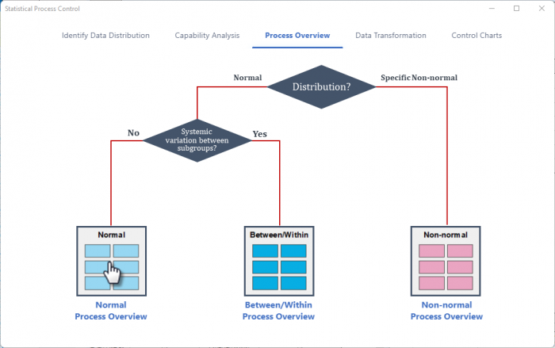
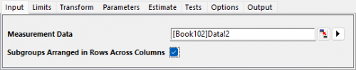
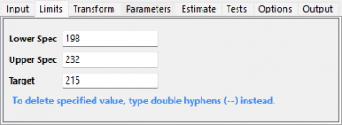
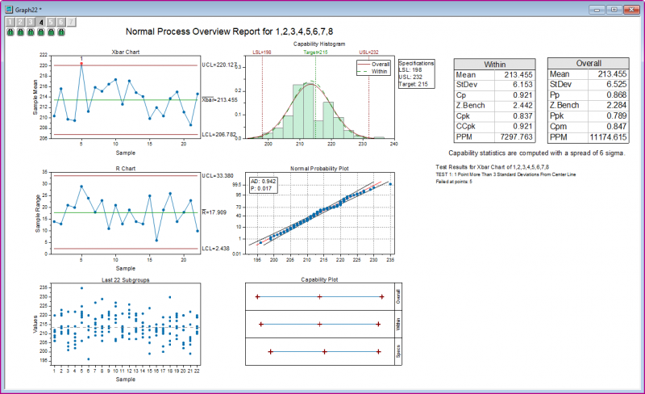
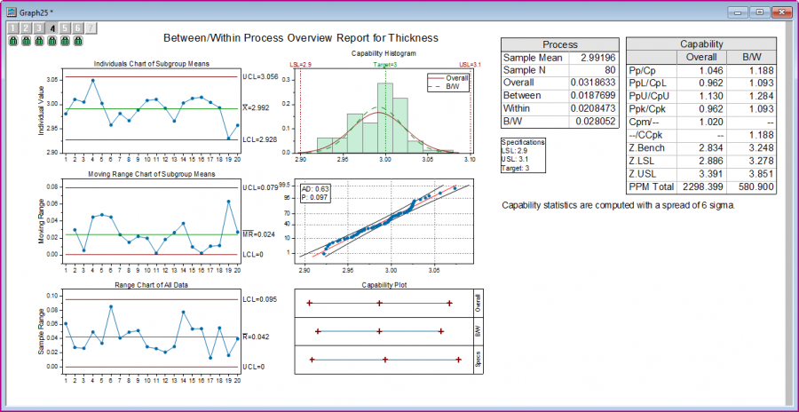
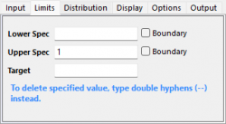
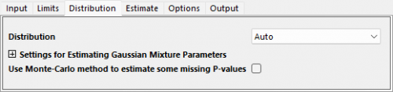
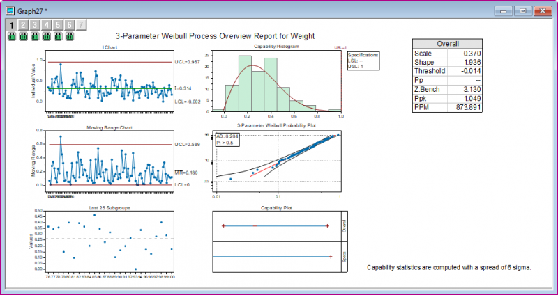

Tutorial for Process Overview
Tutorial-PO
Notes for Starting
- Download the sample project file from here and open it in Origin.
 |
Topics for Further Reading:
|
Normal Process Overview
Background
A quality engineer wants to evaluate the capsule filling process of the machine. The capsule weight needs to be 215 ± 17 mg
He collected the filling weight of 8 capsules every 10 minutes from 8:30 to 12:00. He wants to evaluate how well the weight of capsule fillings meet the requirements
Steps in Origin
- Open folder 1. Normal, activate the workbook Capsule Weight
- Highlight column B ~ I in worksheet. Click the Statistical Process Control icon
 in the Apps Gallery window.
in the Apps Gallery window.
- Select the Process Overview tab, select Normal Process Overview

- In the Input tab of the opened dialog, column B ~ I is selected automatically as Measurement Data. Select the check box Subgroups Arranged in Rows Across Columns

- In the Limits tab, set Lower Spec to be 198, Upper Spec to be 232 and Target to be 215

- Click OK button. A graph with report tables will be created
Interpreting the Results
From the Xbar chart and conclusion of Test1, we can see the point 5 falls out of the UCL.
The Capability Histogram shows not not the observations fall within the LSL and USL.
In addition, Cpk is 0.837, which is less than 1.
The process is not capable.

Between Within Process Overview
Background
A engineer wants to access the production process of the stainless steel sheet.
He collects 4 measurements of the thickness from 20 consecutive steel sheets. The thickness much be 3 ± 0.1 mm.
Steps in Origin
- Open folder 2. Between-Within, activate the workbook Steel Sheet
- Click the Statistical Process Control icon in the Apps Gallery window.
- Keep in the Process Overview tab, select Between/Within Process Overview
- In the Input tab of the opened dialog, select column A to be Measurement Data. Choose Subgroup Size By to be Column and set the Subgroup Size Column to be Column B

- In the Limits tab, set Lower Spec to be 29, Upper Spec to be 31 and Target to be 30

- Click OK button. A graph with report tables will be created
Interpreting the Results
No points fall beyond the control limits in the Individuals, Moving Range, and Range charts, it indicates that the process is stable.
Data points are close to the reference line in the Probability plot, that means the data are normally distributed.
In the Capability Histogram, all the observations are within the specification limits .
Cp is 1.188, which indicates that the specification spread is 1.19 times greater than the 6-σ spread in the process. Cp(1.188) and Cpk(1.093) is not so close to each other, indicating that the process is slightly off centered. For overall capability, Pp(1.046), Ppk(0.962), and Cpm(1.02) are all less than 1.33, which is a generally accepted minimum value for a capable process.
We can conclude that the process is good but its capability still could be improved.

Non-normal Process Overview
Background
There is a dataset of weight values which follows the weibull distribution. We hope the data are not larger than 1.
Steps in Origin
- Opened folder 3. Nonnormal. Activate the workbook Weibull
- Click the Statistical Process Control icon in the Apps Gallery window.
- Keep in the Process Overview tab, select Non-normal Process Overview
- In the Input tab of the opened dialog, column A will be selected automatically as Measurement Data. Choose Subgroup Size By to be Constant and set the Subgroup Size Constant to be 1

- In the Limits tab, set Upper Spec to be 1, keep all other text box to be empty.

- In the Distribution tab, set Distribution to be Auto. It means it will automatically find and report the best distribution according the AD values

- Click OK button. A graph with report tables will be created
Interpreting the Results
The probability plot indicates that the dataset follows 3-parameter Weibull distribution.
No points fall beyond the control limits in the Individuals and Moving Range charts, it indicates that the process is stable.
In the Capability Histogram, all the observation fall below the upper specification limits.
The process meets requirements
